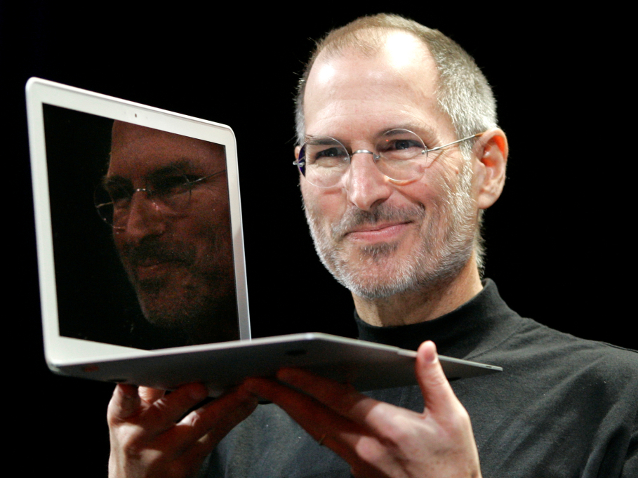

Early Life and Formation of Apple (1955–1979)
Born on February 24, 1955, in San Francisco to a Syrian father and German-American mother, Steve Jobs embarked on a journey that would reshape the tech landscape. Adopted shortly after birth, his pursuit of knowledge led him to Reed College in 1972, where he briefly attended before withdrawing. In 1974, a transformative trip to India for enlightenment and later studies in Zen Buddhism set the stage for his profound impact on the world.
In collaboration with his visionary partner Steve Wozniak, Jobs co-founded Apple in 1976, marking the genesis of the personal computer revolution. Their first success came with the Apple II in 1977, a pioneering mass-produced microcomputer that brought them fame and wealth.
The Xerox Alto and Technological Innovation (1979–1984)
Recognizing the potential of the Xerox Alto in 1979, a mouse-driven computer with a graphical user interface (GUI), Jobs spearheaded the development of the Apple Lisa in 1983. Despite initial setbacks, this paved the way for the breakthrough Macintosh in 1984—the first mass-produced computer with a GUI. The Macintosh not only transformed the industry but also introduced desktop publishing in 1985 with the Apple LaserWriter, featuring vector graphics.
Departure from Apple and Ventures Beyond (1985–1997)
In 1985, a power struggle led Jobs to depart from Apple. Undeterred, he founded NeXT, focusing on computer platform development for higher education and business markets. Simultaneously, Jobs contributed to the visual effects industry by funding the computer graphics division of Lucasfilm in 1986, which later became the acclaimed animation studio, Pixar. The studio produced groundbreaking films, including the first 3D computer-animated feature, Toy Story (1995).
Apple's Renaissance and Steve's Triumphant Return (1997–2011)
In a pivotal moment in 1997, Jobs returned to Apple as CEO after the acquisition of NeXT. Faced with a company on the brink of bankruptcy, his leadership and collaboration with designer Jony Ive led to a cultural revolution. From the iconic "Think Different" campaign to the creation of transformative products like the iMac, iTunes, iPod, iPhone, and iPad, Jobs revitalized Apple's identity.
Legacy and Recognition (2011 Onward)
In 2003, Jobs faced a health challenge with a pancreatic neuroendocrine tumor, leading to his passing in 2011 at the age of 56. Tim Cook succeeded him as CEO, continuing to build upon the foundation laid by Jobs. In 2022, Steve Jobs was posthumously awarded the Presidential Medal of Freedom, a testament to his enduring impact on technology, innovation, and culture.
Honors and awards
1985- awarded National Medal of Technology (with Steve Wozniak) by US President Ronald Reagan, the country's highest honor for technological achievements.
1987- Jefferson Award for Public Service.
1989- Entrepreneur of the Decade by Inc.
1991- Howard Vollum Award from Reed College.
2004–2010- listed among the Time 100 Most Influential People in the World on five separate occasions.
2007- named the most powerful person in business by Fortune magazine.
2007- inducted into the California Hall of Fame, located at The California Museum for History, Women and the Arts.
2012- Grammy Trustees Award, an award for those who have influenced the music industry in areas unrelated to performance.
2012- posthumously honored with an Edison Achievement Award for his commitment to innovation throughout his career.
2013- posthumously inducted as a Disney Legend.
2017- Steve Jobs Theater opens at Apple Park.
2022- posthumously awarded the Presidential Medal of Freedom by US President Joe Biden, the country's highest civilian honor.